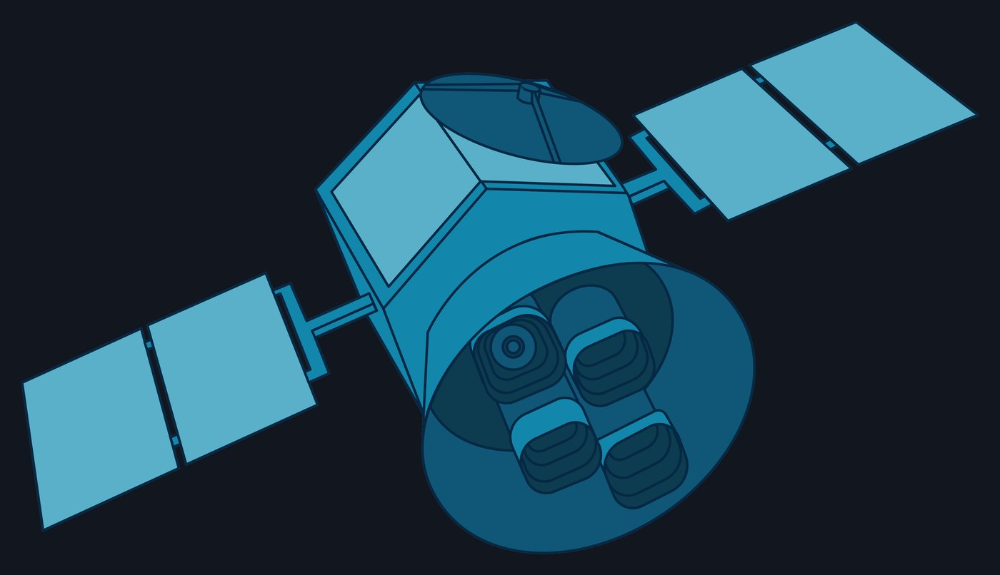
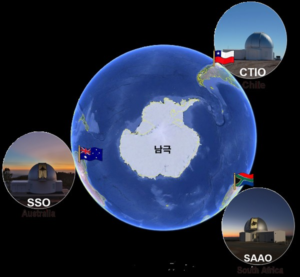

Exploring All-Sky Web App
Analyze public sky data in your browser
EASWA lets learners examine real observations from TESS, KMTNet, and Gaia. Each activity guides Steps 0–6 with sources, observing conditions, and model assumptions visible throughout.
Inquiry modules
Three guided investigations. Each presents data provenance, observing conditions, and model choices before fitting or classification.
TESS transit question
Guiding question: Does this star show a transit and what radius ratio does the fit imply? Data source: NASA TESS light curves; compare to NASA Exoplanet Archive. Action: measure dip, fit model, compare results.
KMTNet lensing question
Guiding question: Do the three observatories reveal a planetary anomaly in magnification? Data source: KASI KMTNet public microlensing light curves. Action: align sites, inspect residuals, flag anomaly.
Gaia cluster question
Guiding question: What age and distance match this cluster’s color–magnitude shape? Data source: Gaia DR3 photometry. Action: build CMD, overlay isochrones, read age and distance.
Start an activity
Open any module to load public data, follow the prompts, and record findings. Results can be exported with citations and assumptions.
Start a guided investigation
Select a module below to load data and begin.

NASA TESS light curves
Measure a transit depth, fit a simple transit model, and compare the inferred radius ratio with values in the NASA Exoplanet Archive. Source metadata, sector, and flags are shown alongside the plot.
Start TESS
KASI KMTNet microlensing
Inspect magnification curves from three observatories, align time series, and look for short-timescale deviations indicative of a planetary anomaly. Site conditions and cadence are displayed.
Start KMTNet
Gaia DR3 cluster photometry
Build a color–magnitude diagram, overlay isochrone families, and read age and distance from the sequence shape. Parallax quality and photometric uncertainties are visible.
Start GaiaHow a session runs
Each activity follows the same Step 0–6 flow with sources, observing conditions, and model assumptions always visible — automation without a black box.
For teachers
Planning guidance for classroom use.
Suggested time
A single module fits in 45–60 minutes with brief wrap‑up. Two modules can span a 90‑minute block with time for discussion.
Grouping
Pairs at one computer support discussion during model fitting. Whole‑class debrief uses exported results to compare reasoning.
Difficulty level
Middle to early undergraduate. Quantitative steps are scaffolded; uncertainty and limitations are discussed at each stage.
Prerequisites
Comfort with plotting and reading graphs. For TESS and KMTNet, basic light‑curve concepts; for Gaia, color and magnitude basics.
Data sources and credits
Primary sources, observing conditions, and model assumptions used in EASWA.
Public NASA TESS mission data via MAST. Comparisons use the NASA Exoplanet Archive. Sector, cadence, and quality flags are shown in‑app.
KASI KMTNet public microlensing photometry from Chile, South Africa, and Australia. Site, filter, and timing alignment are documented.
Gaia DR3 photometry builds color–magnitude diagrams. Parallax quality, extinction notes, and photometric uncertainties are indicated.
Transit fits use a simple limb‑darkened model; microlensing uses standard point‑lens baselines; CMD overlays use published isochrones.
Hero: NASA/ESA Hubble Ultra Deep Field. Module images: NASA TESS preview (NASA), KMTNet network (KASI), Pleiades / M45 (NASA/ESA/AURA·Caltech). The session-flow cards are screenshots of the EASWA app itself.
Educator interest
Tell us your course context and we will follow up with alignment ideas and sample datasets.